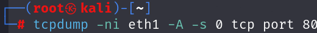
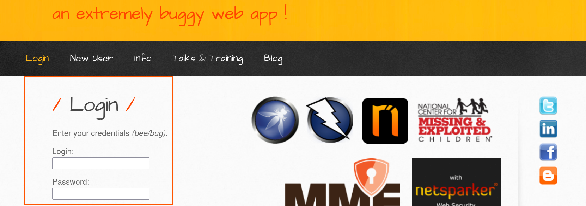
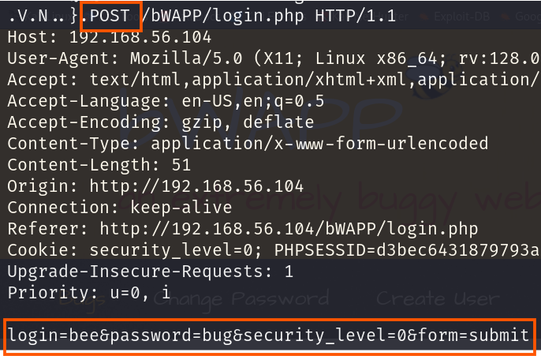

- 민감한 데이터 정보란?
다음과 같다.
각종 개인정보(주민등록번호, 카드 정보, 건강 정보, 종교, 정치 성향, 가족 구성원 등 사생활 관련 정보 포함)
패스워드, 세션 ID, 세션 토큰 등과 같은 로그인에 사용되는 정보
업무상 기밀 등 비공개를 관리되는 정보
데이터가 적절하게 암호화되지 않거나 평문으로 저장되어 노출되는 경우이다.
다음과 같다.
HTTP 프로토콜을 사용하여 민감한 데이터가 전송되는 경우
민감한 데이터가 평문으로 저장되는 경우
안전하지 않은 암호화 방식을 사용하는 경우
HTTP 프로토콜에 의한 노출
HTTP으로 전달되는 요청, 응답 메시지들은 [네트워크 스니핑] 공격에 의해 도청될 가능성이 높다.
사용되는 도구
- WireShark (GUI)
- tcpdump (CLI)
[실습]
칼리리눅스는 CLI 기반이다 즉 이번 실습에서는 tcpdump를 사용할 것이다.

<옵션>
-n : IP주소나 포트 숫자를 호스트 네임이나 서비스 이름으로 변경하지 않고 숫자 그대로 표시
-i : 인터페이스를 지정하는 옵션. -i eth1을 하면 eth1 인터페이스를 통해 전달되는 트래픽을 스니핑 한다.
-A : 사람이 알아볼 수 있는 아스키(ASCII) 형태의 문자열로 출력하는 옵션이다.
-s <숫자> : 표시할 내용의 길이를 지정함, -s 0을 사용하면 길이 제한 없이 출력됨
tcp : TCP프로토콜만 출력하도록 필터링함
port 80 : 80번 포트에 대해서만 출력하도록 필터링함

tcpdump를 실행한 채로 저기에 있는 로그인창에 bee/bug를 입력하게 되면

아래와 같이 결괏값이 나온 것을 볼 수 있는데 POST 방식인데 login에 bee / password에 bug라는 민감한 사용자 정보가 노출되는 것을 확인할 수 있었습니다.
이와 같이 HTTP 프로토콜로 전송되는 데이터는 네트워크 스니핑에 노출될 수 있음.